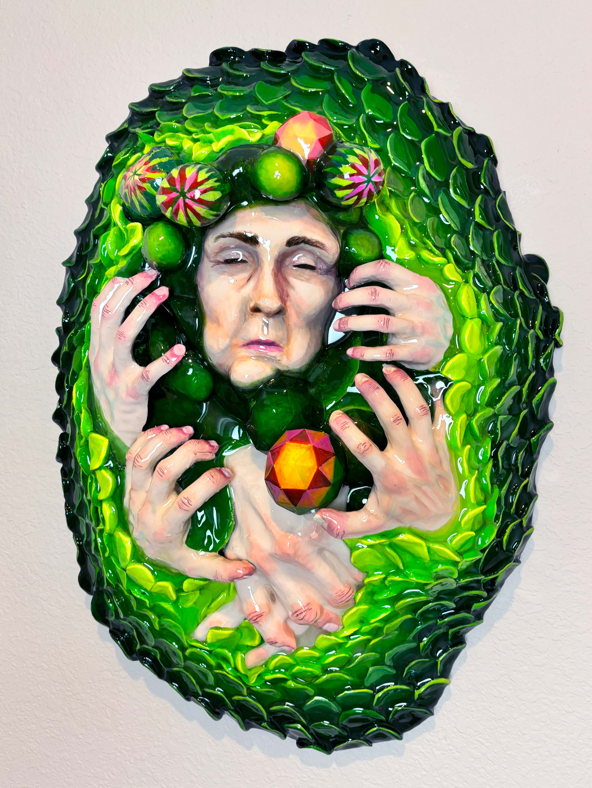
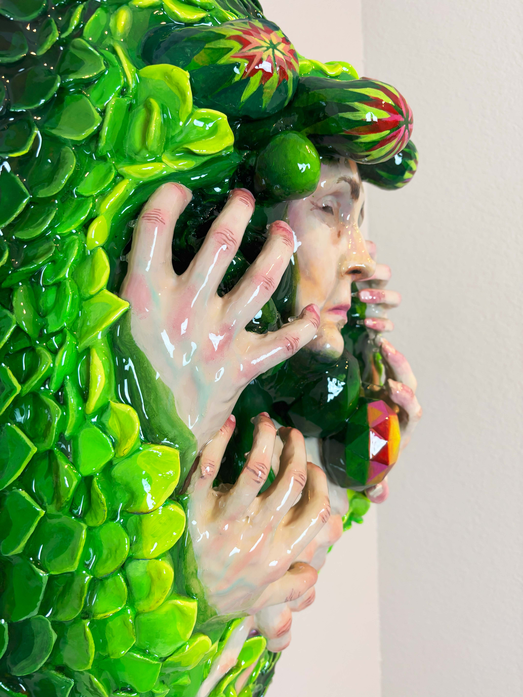

Who Am I?
Sculptor, creative coder, and AI explorer working across physical and digital mediums.
My Process & Workflows
Three AI-assisted workflows I've built for myself — each one starts with my original work as the seed.
AI-Assisted Programming
Pseudo code & sketches → GPT image gen → Claude Code to build
3D Printed Sculpture
Sketch → AI ideation → 3D model → VR sculpt → print → paint
Video & Projection
Create source material → AI video gen → StreamDiffusion interactive output
Workflow: AI-Assisted Programming
Kinetic Contemplations
JavaScript generative art


Nameless Dread
Generative animation


Workflow: 3D Printed Sculpture
Crying Man
3D Printed Sculpture, Hand Painted
ChatGPT Ideation
Exploring form through AI image generation


Final Sculpture


Burial
3D Printed Sculpture, AI Video, Projection
ChatGPT Ideation


AI-Generated 3D Model
Interactive — click and drag to rotate
Loading model...
Final Sculpture


Sitting Woman
AI Image Gen, AI 3D Modeling
GPT Image Generation
Iterating on form through AI


AI-Generated 3D Model
Interactive viewer
Loading model...
Flower Fingers
AI Image Generation, 3D Modeling
AI Image Generation
Exploring organic hybrid forms


Workflow: Video & Projection Mapping
AI-Generated Video
Video generation iterations
Experiments, Failure & Tips
Not everything works. The process is messy and full of failures — and that's where the learning happens.
The Experiment Reel

Tips for Your AI Workflow
The Seed Is Your Work
The seed is usually my original work. When it isn't, the end result is my original "collage" of AI — still uniquely mine.
Get Smart with AI Planning
Before you build, use AI to help you plan. Think through architecture, approach, and constraints upfront.
Use AI to Rewrite Prompts
Don't settle for your first prompt. Ask AI to improve, refine, and rewrite your prompts for better results.
Start with What You Know
Ideally start with hand-written scripts and sketches. AI amplifies your vision — you still need to have one.
Demo
Watch the entire workflow come together — from sculpture to interactive screen, in real time.